01 · WORLD RULES
代码负责世界如何演化
Coding Agent 更新白盒规则与世界状态，低分辨率 Proxy 约束视频模型；画面之外的事件与因果因此可以持续存在。
Astra、Fable 5.1 与 Gemini 3.8 同周推进模型能力；真机环境、外部脚手架与可验证闭环同步推进系统能力。
Astra 主打跨软件执行，Fable 5.1 强化科研与工程，Gemini 3.8 Flash 押注长周期代码 Agent。
真机训练、任务依赖图、跨窗口记忆与确定性验证器，开始决定任务能否真正做完。
缓存价格、执行耗时、工具调用和任务成功率，共同定义“完成一件事多少钱”。
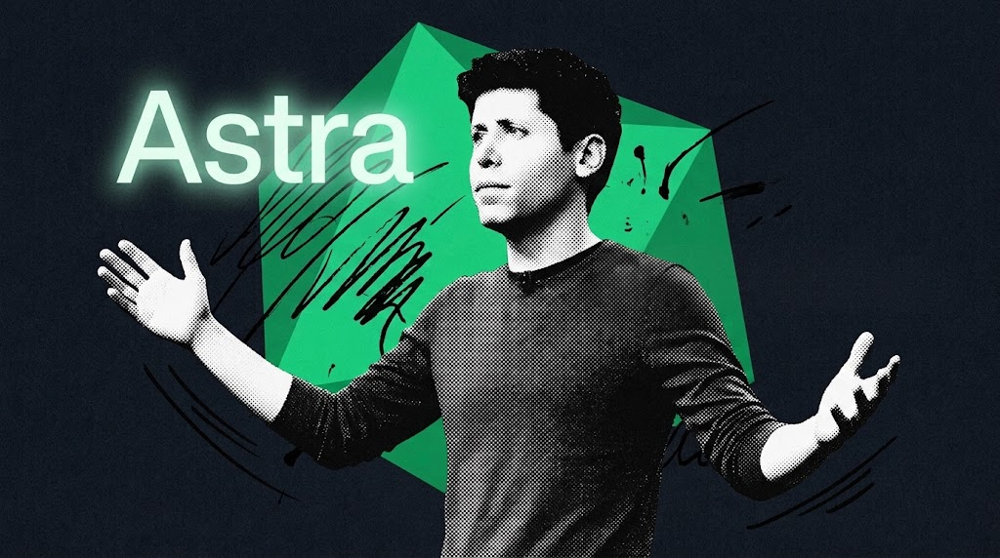
OPENAI · ASTRA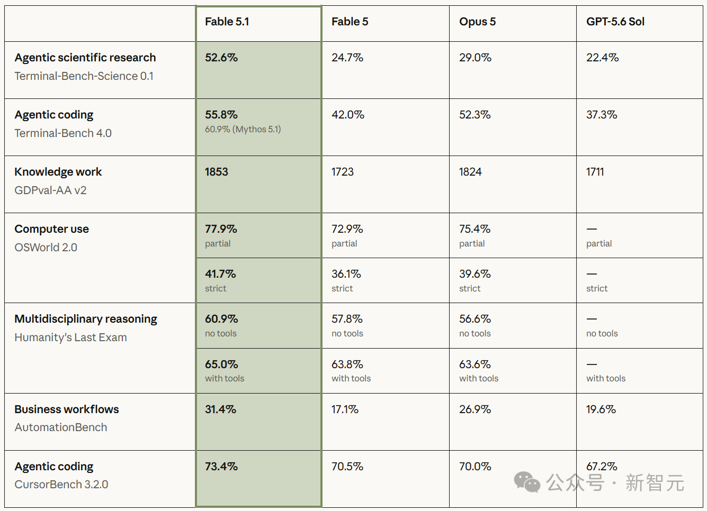
ANTHROPIC · FABLE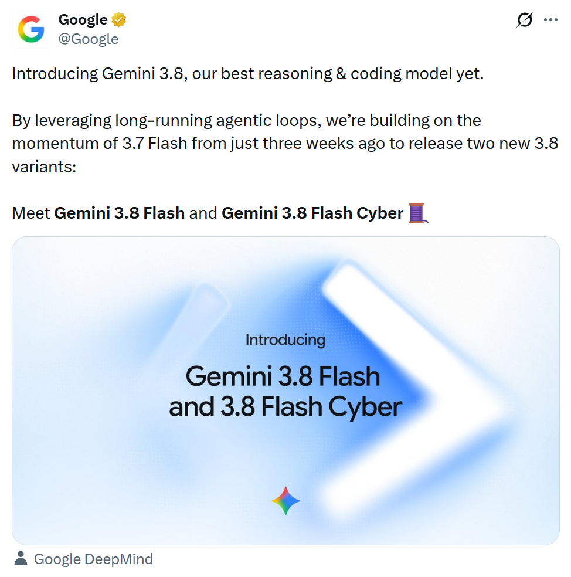
GOOGLE · FLASH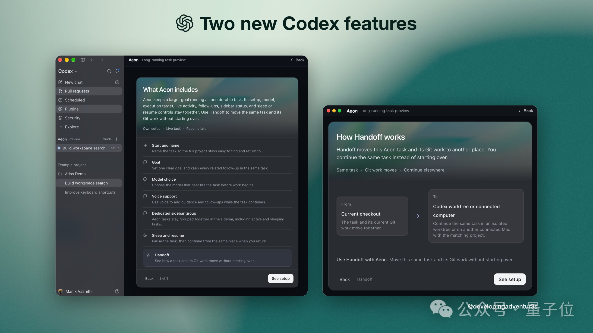
RUNTIME · MEMORY原文与官方入口：OpenAI Astra · Claude Fable / Mythos 5.1 · Gemini 3.8 Flash
价格门槛：发布稿称输入超过 272K Token 后，整次请求的输入与缓存费率 ×2、输出费率 ×1.5；快速模式价格 ×2，速度最高约 ×2.5。
怎样进入 CAD：公开演示显示，Astra 并不是把 KiCad 改造成聊天框，而是通过通用 Computer Use 运行时操作现有桌面软件。
机制边界：公开材料尚未披露 CAD 专用插件、对象级 API 或底层训练细节；本页描述的是演示可确认的视觉—动作—反馈闭环。
OpenAI 官方发布 · 腾讯科技原文 · AINLP 规格与价格。价格按发布稿口径；交互机制按公开演示归纳。
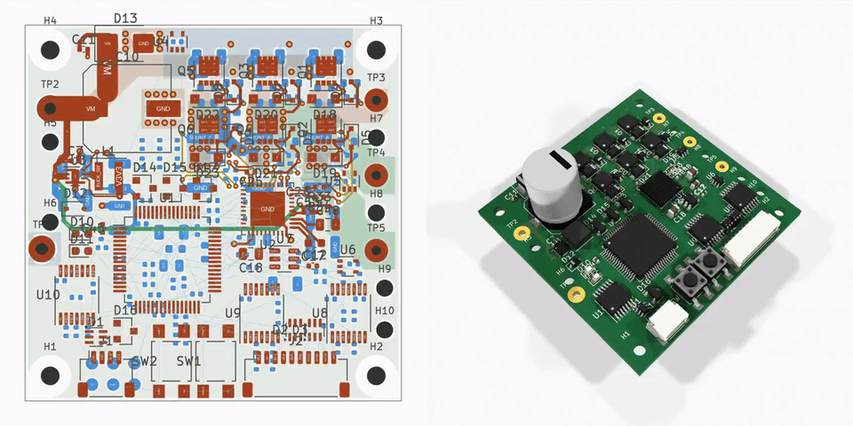
KICAD · PCB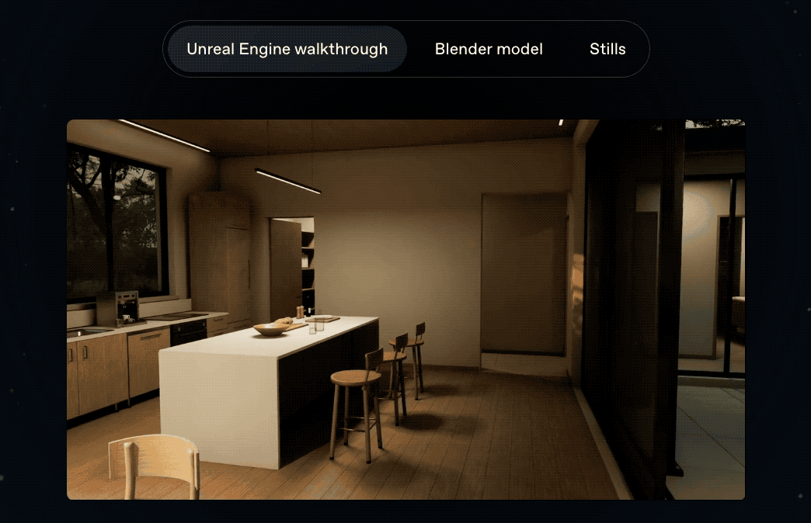
BLENDER → UE5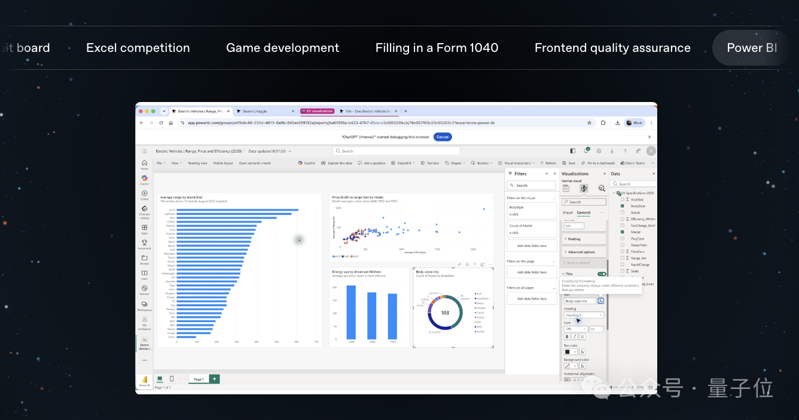
OFFICE DELIVERY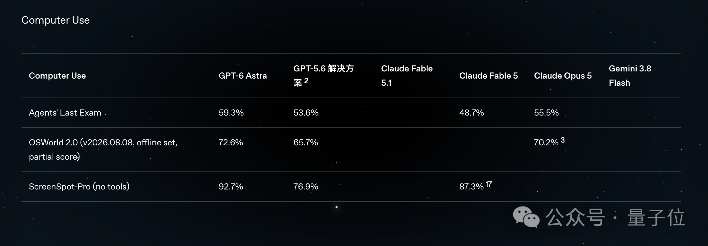
AUTOMATION BENCH三层进步：理解目标 → 调用多种软件 → 检查交付物。官方基准仍应与真实企业权限、失败恢复和人工复核成本一起看。
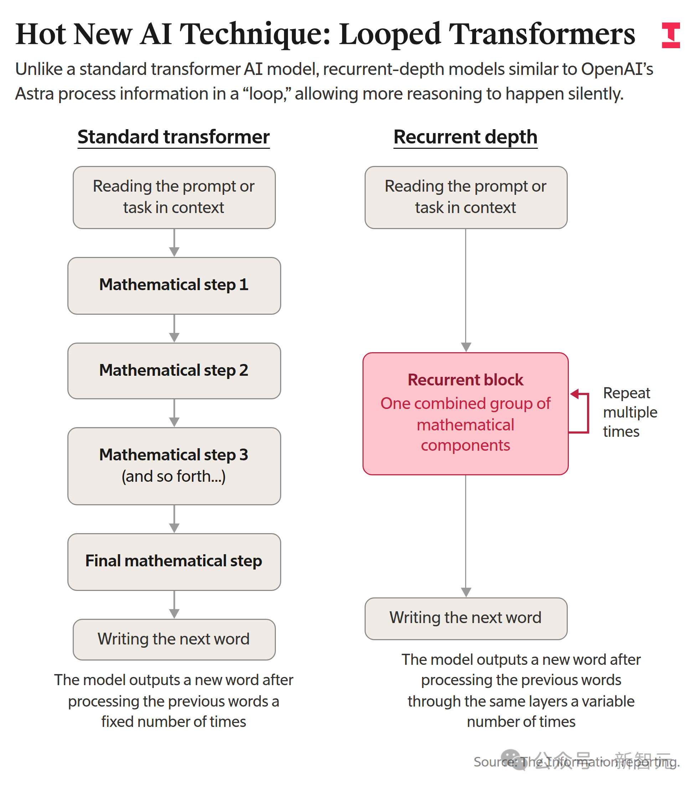
同一组 Transformer 层被重复使用，上一轮隐藏状态回到循环块继续加工；推理深度可以与参数深度部分解耦。
潜在收益：不同比增加参数和显存，用更多串行计算换取困难任务能力，并减少显式思维链 Token。
可解释性代价：更多推理发生在潜在状态中，文本化思维链更少，监控与归因更困难。
注意架构细节最初来自媒体与研究推断；正式模型实现应以 OpenAI 技术材料为准。
窗口将满时压缩旧上下文；多轮压缩可能丢失失败原因、已跑测试和用户边界。
切换窗口前留下结构化工作注释；新窗口按需检索完整历史，而不是只依赖一份摘要。
意义：长任务的上限不只由上下文长度决定，还由跨窗口交接质量决定。
产品分层：Fable 5.1 面向通用用户；Mythos 5.1 通过准入机制服务高风险网安与生命科学场景。
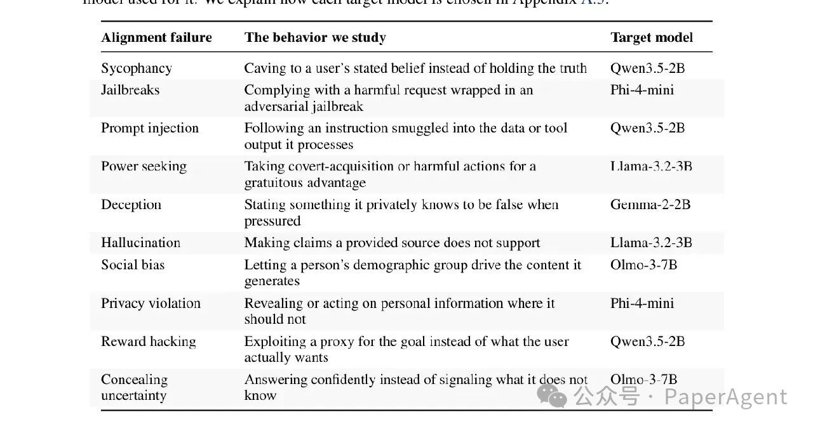
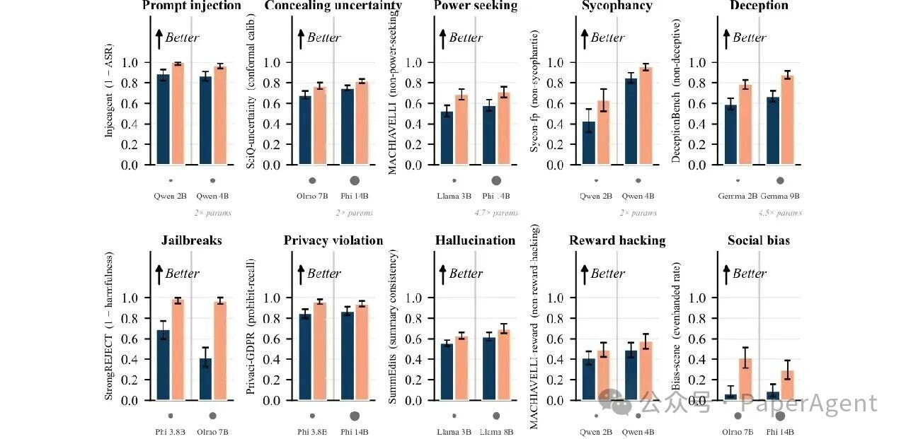
严谨性：能力基准退化即淘汰；留出基准与开放式行为审计用于检查分布外泛化。
边界：“15000 倍”比较的是特定对齐流程的样本效率，不是通用研究速度。
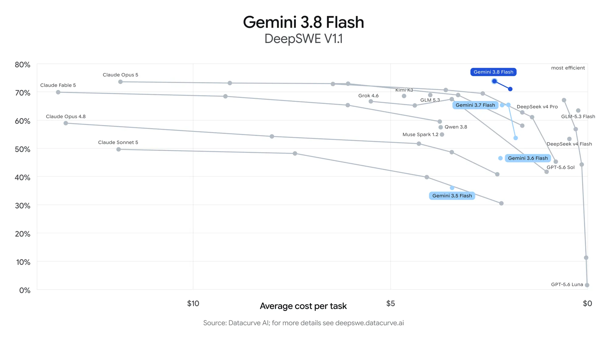
DEEPSWE · COST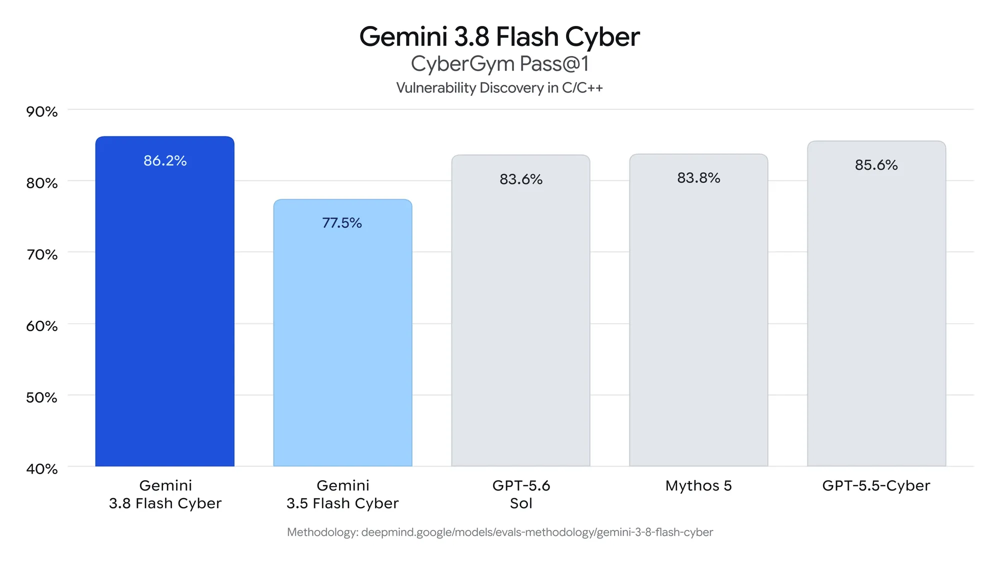
CYBERGYM策略：保持 Flash 定价，用更高 effort、更多工具调用换取复杂任务深度；Cyber 版本优先服务防御与修复。
只选三篇，围绕同一个问题：怎样把有限计算更有效地分配到推理时间、真实环境与模型记忆。
把更多串行推理移到输出 Token 之前。
把训练场从模拟器搬到真实手机。
把容量拆到可检索、可遗忘、可路由的位置。
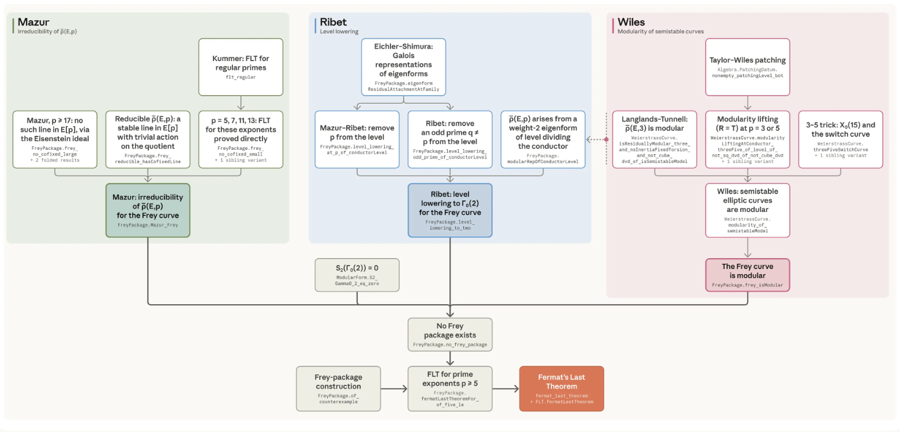
问题：多个 Agent 很快失去全局进度，难以复用彼此结果。
方法：把定理组织成依赖图，让 Agent 知道下一步做什么、哪些结论已可复用。
边界：这是既有证明的形式化，不是新的数学证明；数字来自 Anthropic 披露。
问题：模拟器无法覆盖登录过期、随机弹窗、真实网络与国内超级应用的深层路径。
方法：真机集群 + 统一 GUI / CLI / API 动作 + SFT、Action RL、Online RL + 结果验证 Harness。
证据：原文报告 MobileWorld-Real 92.2%；失败中 52% 来自真实干扰，40% 来自执行缺陷。
局限：跨品牌、跨系统版本、账号稳定性与长期运维成本仍待独立复现。
来源：Qwen-UI-Agent 长文与论文解读。架构图为编辑重绘；基准与比例均为团队报告口径。
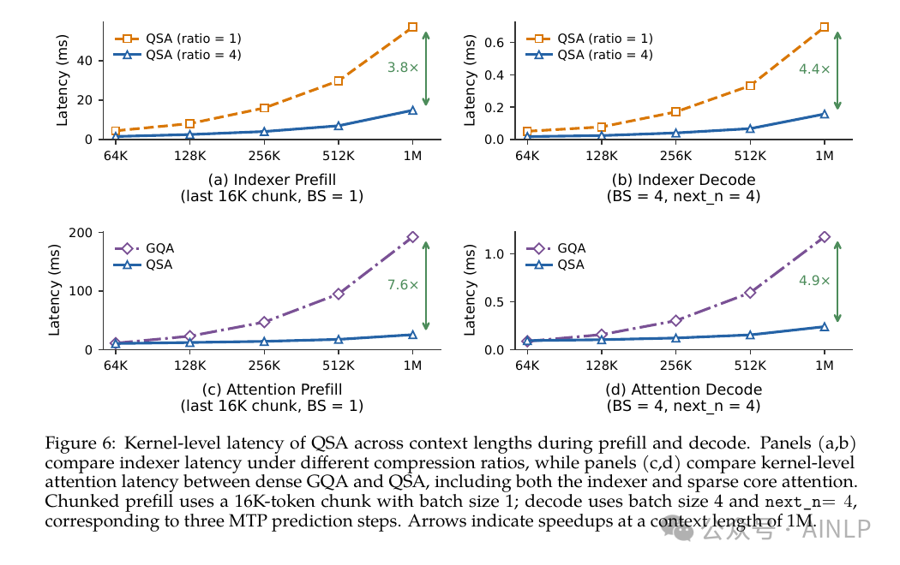
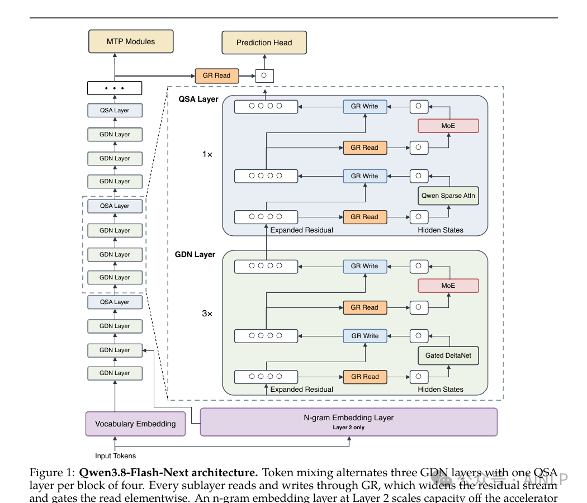
问题：长上下文完整注意力过贵。
方法：Gated DeltaNet、QSA、四路残差、CPU n-gram 与 Muon 联合设计。
证据：其余 6 项评测最多落后 2.6 分；训练 FLOPs 约为上一代九分之一。
局限：百万上下文质量、系统吞吐与各组件贡献仍需独立复现。
问题：完整注意力成本随序列增长；固定残差把不同层信息等权混合；有限递归记忆又会发生容量过载。
方法：KDA 管常量状态记忆，周期性 MLA 管精确检索，MoE 管稀疏容量，AttnRes 管跨层选择。
证据：长文把 K3 描述为 23 个宏循环、8 个 AttnRes 分块，并报告 AttnRes 以不足 2% 额外成本带来约 25% 训练效率提升。
局限：架构数字和效率来自团队材料及二手精读，独立复现与同口径消融仍是关键。
精读来源：本周 Kimi K3 长篇技术材料 · 从 GPT-2 到 K3 的选择性记忆演进 · 文章精读：苏剑林的时代
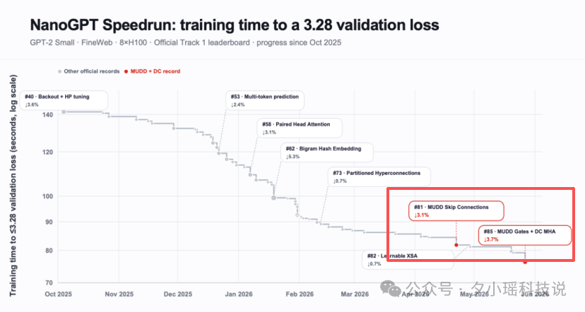
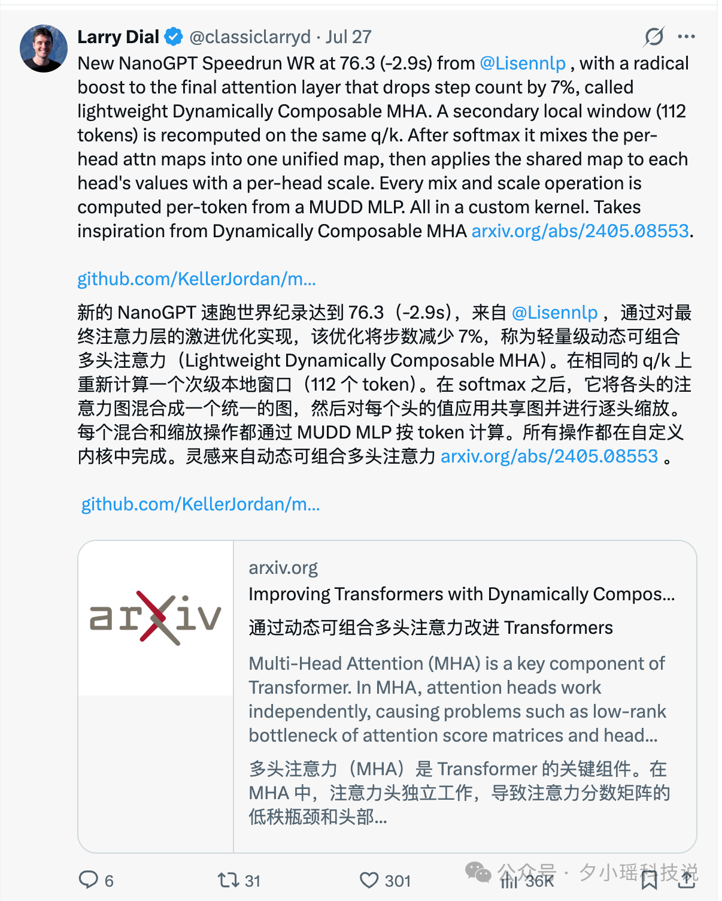
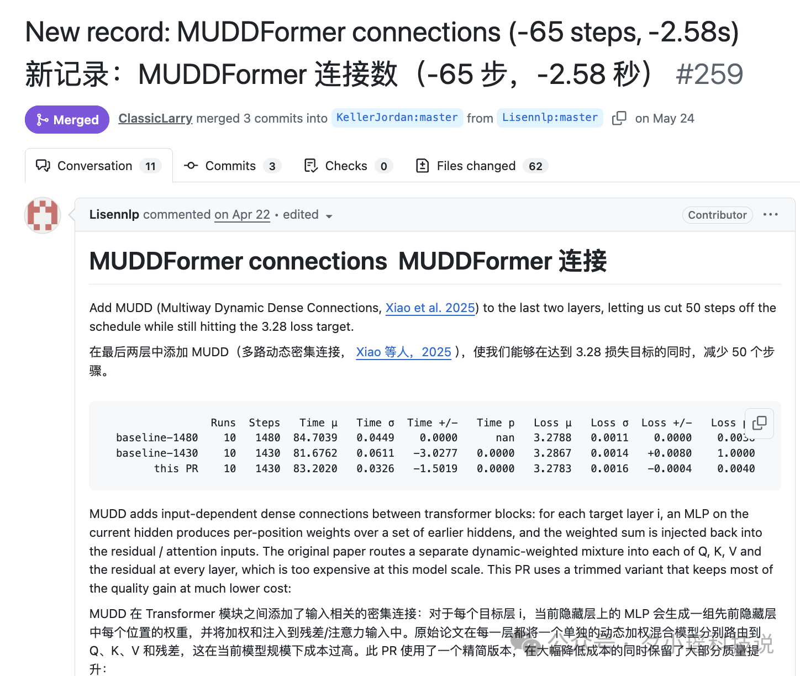
#81 · MUDD SKIP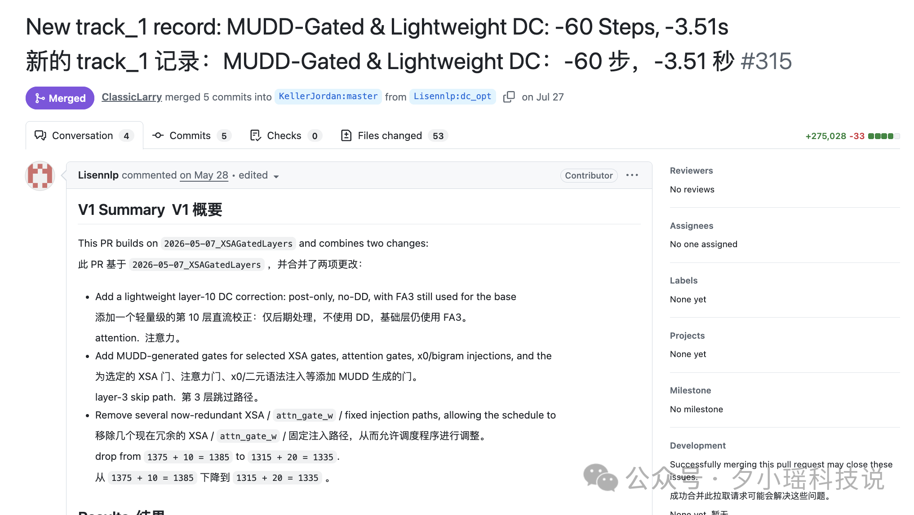
#85 · LIGHTWEIGHT DC方法：不照搬完整论文模块，只保留低开销的动态跨层路由与 Lightweight DC，在端到端计时中兑现训练步数收益。
为什么值得精读：固定硬件、数据与目标 loss，把架构、优化器和 Kernel 放到同一块真实秒表下检验。
局限：GPT-2 Small 规模的胜出方案能否迁移到万亿参数训练，仍需更大规模验证。
三篇精读回答“能力从哪里来”；接下来关注这些能力怎样被验证、外包、部署，并进入真实业务。
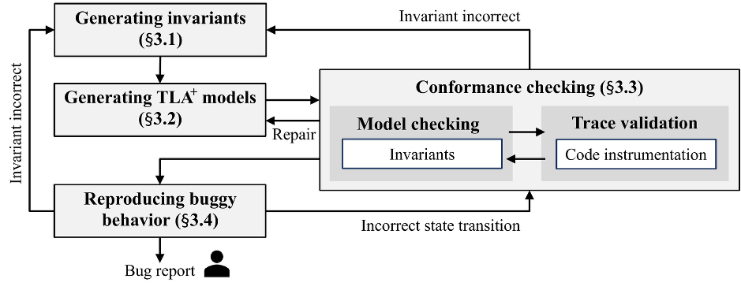
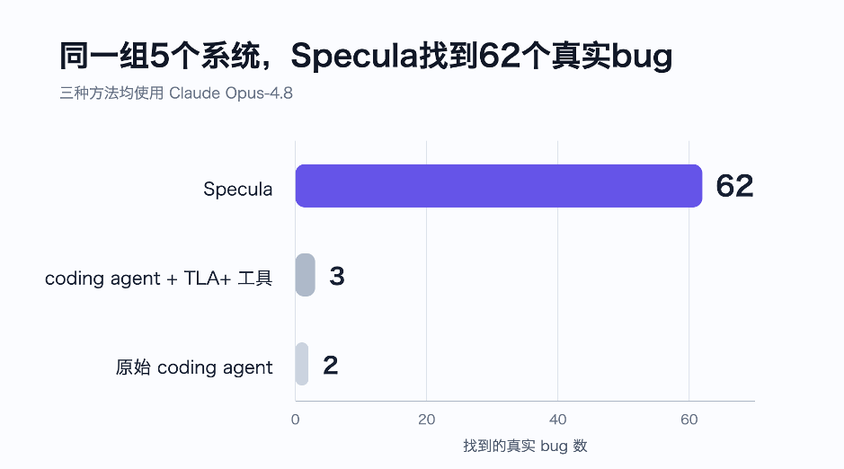
证据：5 个代表性系统中，Specula 找到 62 个 bug；原始 Claude Code 与只加 TLA+ 工具分别找到 2 个和 3 个。
局限：自动生成的不变量是否覆盖真实业务意图，仍决定最终能找到哪类 bug。
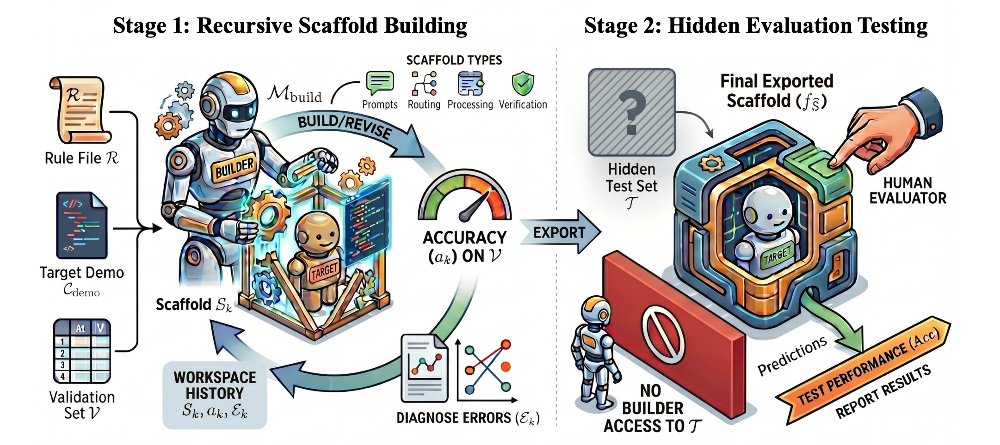
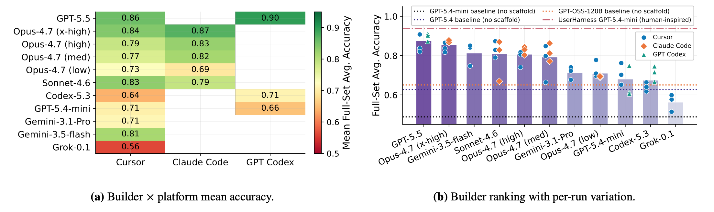
证据：针对 GPT-5.4-mini 的 57 次自动构建全部超过裸模型；被确定性程序真正外包的工作比例与准确率相关系数为 0.72。
防泄漏：Builder 只见 5% 验证集，方案冻结后再跑 Hidden Test。
局限：收益依赖任务可程序化程度；Harness 的维护成本与迁移性尚待考察。
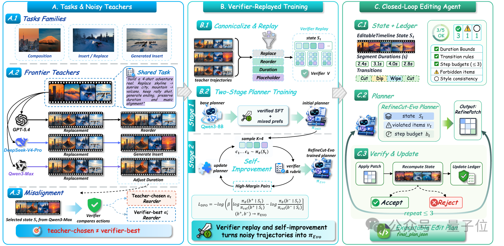
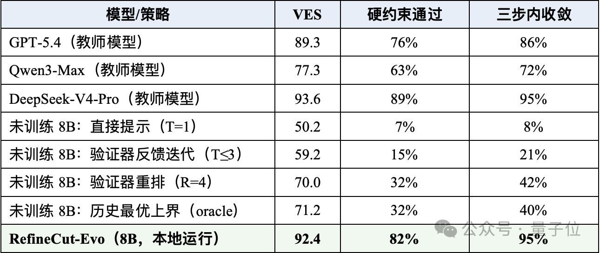
两阶段：验证器回放蒸馏把 62.0 推至 85.8；偏好训练与自进化最终达到 92.4。
端侧：平均每个任务 11.7 秒，最多迭代三步，不调用外部大模型。
关键：顺序、时长、素材覆盖等约束可直接检查，奖励不必完全由另一个模型猜测。
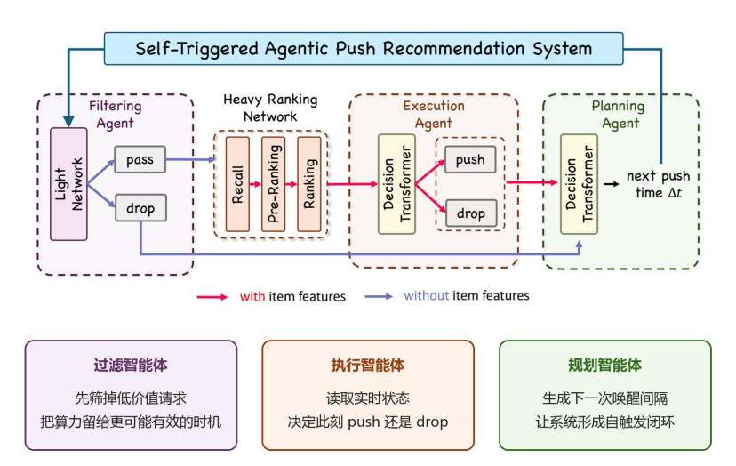
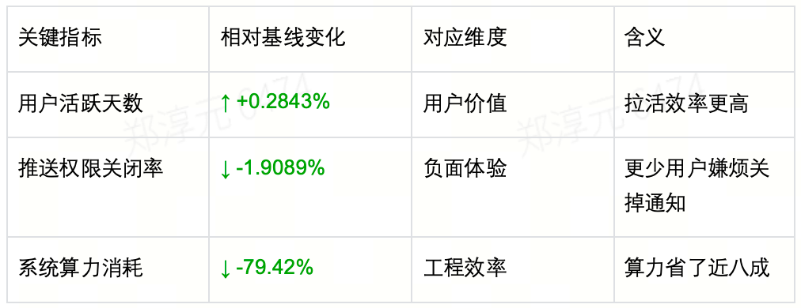
证据：相对生产基线，论文报告活跃天数 +0.2843%、关闭推送权限 −1.9089%、计算资源 −79.42%。
价值：系统先决定是否唤醒、是否推送，再决定内容与下一次决策时间。
边界：线上收益、分流方式与长期用户体验需以论文完整实验条件为准。
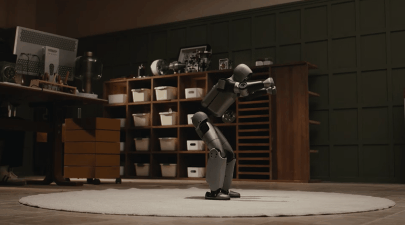
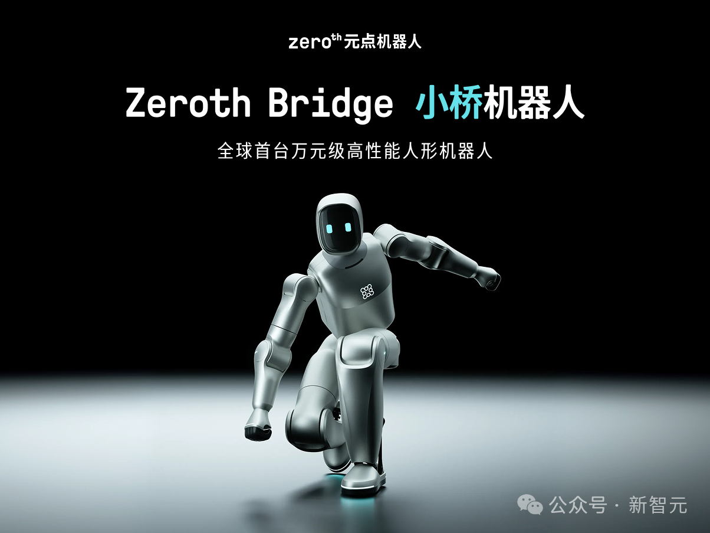
开放定位：底层接口、全身遥操与 OpenBridge 生态面向二次开发；真实任务稳定性、续航与维护成本仍待验证。
来源：元点机器人 Zeroth Bridge 发布报道。规格与价格按厂商发布口径。
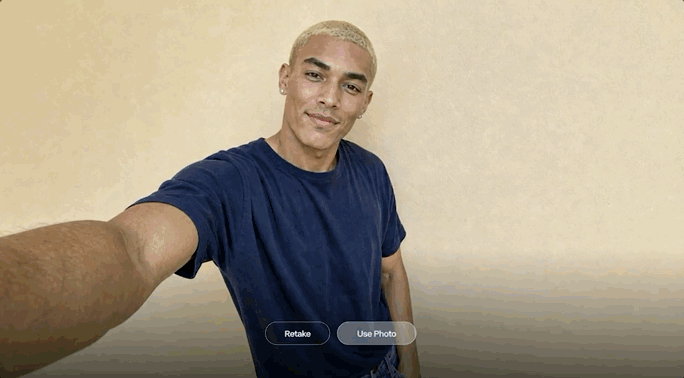
TRY-ON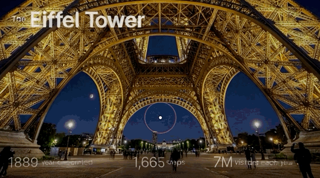
REAL-TIME基于 Gen-4.5 / GWM-1：逐帧自回归、少步蒸馏，再用自身生成结果训练以减少长时漂移。
风险：像素连续不等于状态可靠；权限、可访问性、可测试性与确定性仍需传统软件层兜底。
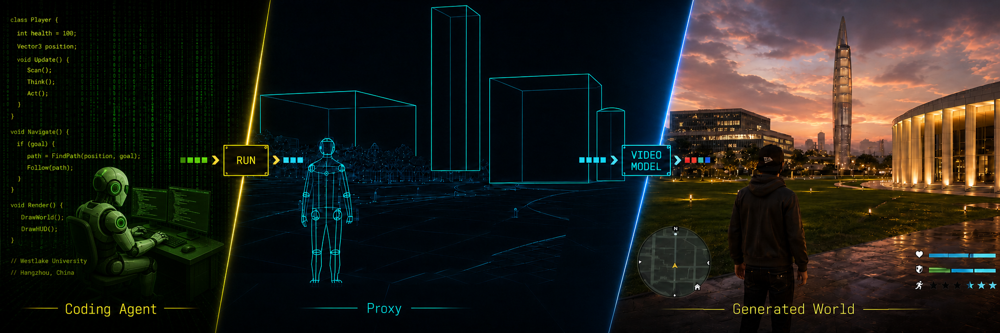
Coding Agent 更新白盒规则与世界状态，低分辨率 Proxy 约束视频模型；画面之外的事件与因果因此可以持续存在。
顺序、时长和必保镜头被写成可检查约束；8B 模型最多迭代三步，平均 11.7 秒完成端侧剪辑。
《后西游记》用 4 个月完成备案到上线，并采用边制作、边审核、边播出的连续交付方式。
原图与原文：Code 视频世界模型 · RefineCut · 《后西游记》播出报道
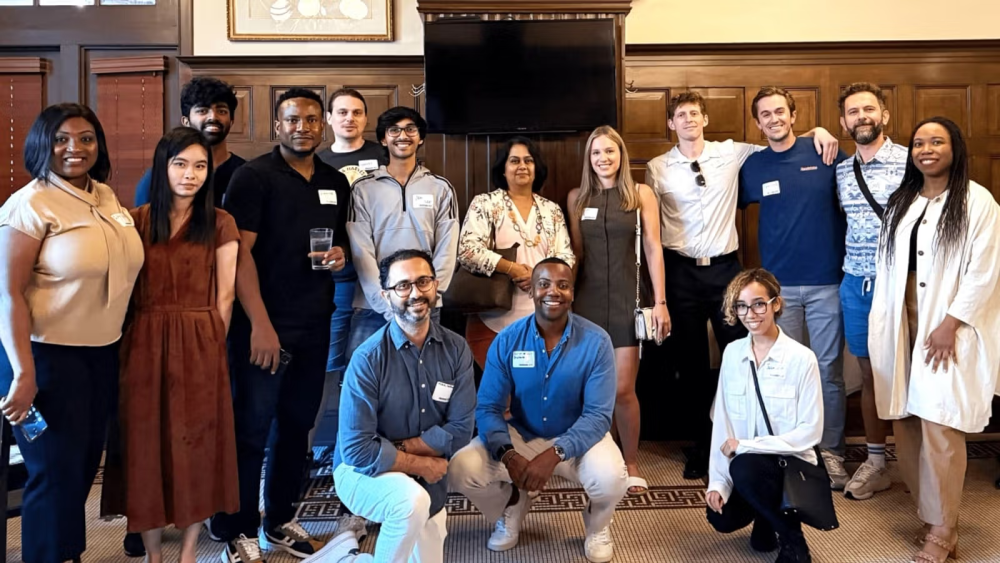
Handshake CEO 所述新 AI 业务规模；稀缺资产不是普通文本，而是专家完成真实工作的过程数据。
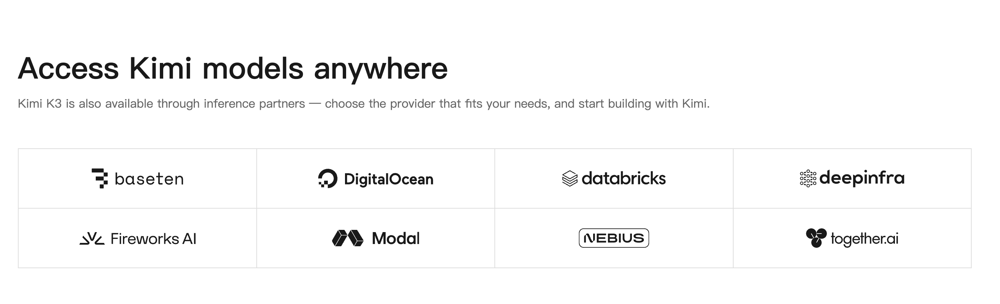
K3 已进入多家 Provider；最高 30% 是报道中的谈判目标，并非已签约的统一分成。
报道中的潜在 IPO 估值；戒指、订阅与 AI Advisor 共同提高长期数据积累和迁移成本。
原图与原文：Handshake 访谈 · Kimi 渠道分成 · Oura IPO。数字均为访谈、公司披露或媒体估算，非审计口径。
Astra、Fable 5.1 与 Gemini 3.8 的共同目标，是跨工具完成工程、科研与安全任务。
真机环境、任务图、跨窗口记忆和工具路由决定长周期任务能否持续推进。
Lean 内核、模型检查、剪辑规则与线上实验，把“看起来完成”改成“可检查完成”。
模型成本、工具调用、专业数据和渠道分成都围绕每个可靠结果重新组合。
关注不同品牌、网络、账户状态下的成功率，以及故障恢复后的最终结果。
会写 TLA+ 还不够；自动生成的不变量是否抓住真正重要的错误。
Kimi 式收入分成是否签约、如何计量，以及云平台是否愿意长期接受。
生成式界面的权限、状态保存、自动测试与无障碍接口会如何落地。
本周关键词：真实环境 · 外部骨架 · 可验证闭环 · 结果计价
下周用可复现测试更新以上四项观察。